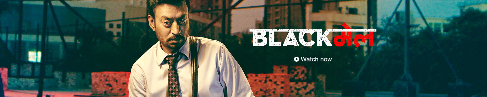

<!DOCTYPE html>
<html>
  <head>
    <style>
      .posterImg {
        position: relative;
        width: 80%;
        border-radius: 5px;
        border: 1px solid red;
        overflow: hidden;
      }
    </style>
  </head>

  <body onload="atomaticScrolling()">
    
    <!-- 
       -->
    <script>
      var n = 0;
      var allImg = ["img/FMjpg_1.jpg", "img/movie2.webp", "img/movie3.webp"];
      var printHear = document.querySelector(".posterImg");
      function atomaticScrolling() {
        setInterval(function () {
          var l = allImg.length;
          if (n <= l) {
            console.log(n);
            printHear.src = allImg[n];
            n++;
            if (n === l) {
              n = 0;
            }
          }
        }, 3000);
      }
      //   window.onload = atomaticScrolling();
    </script>
  </body>
</html>
